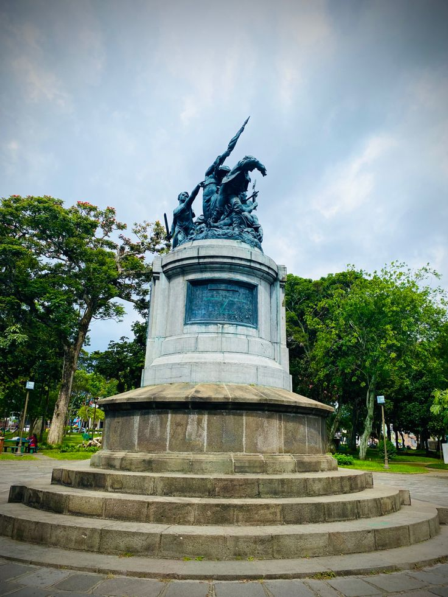
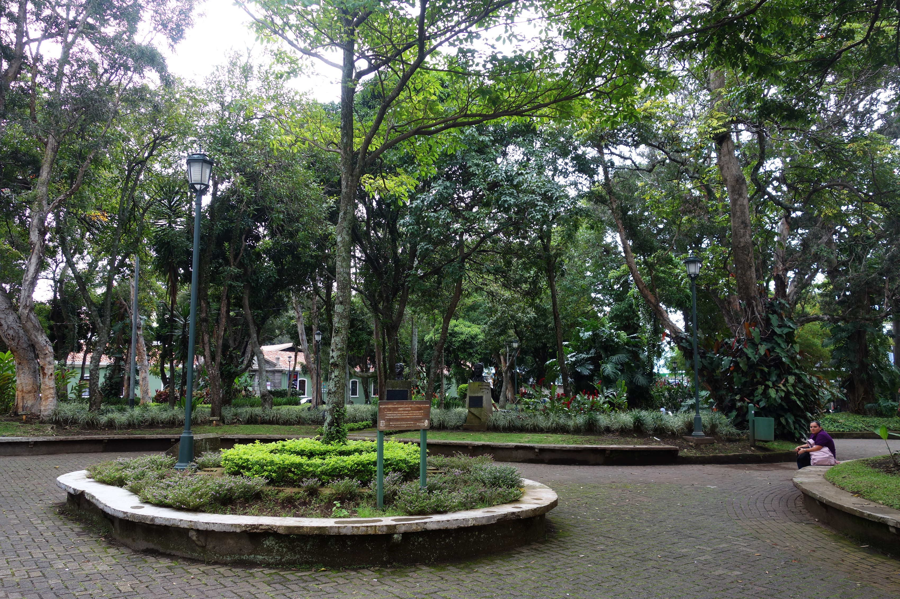
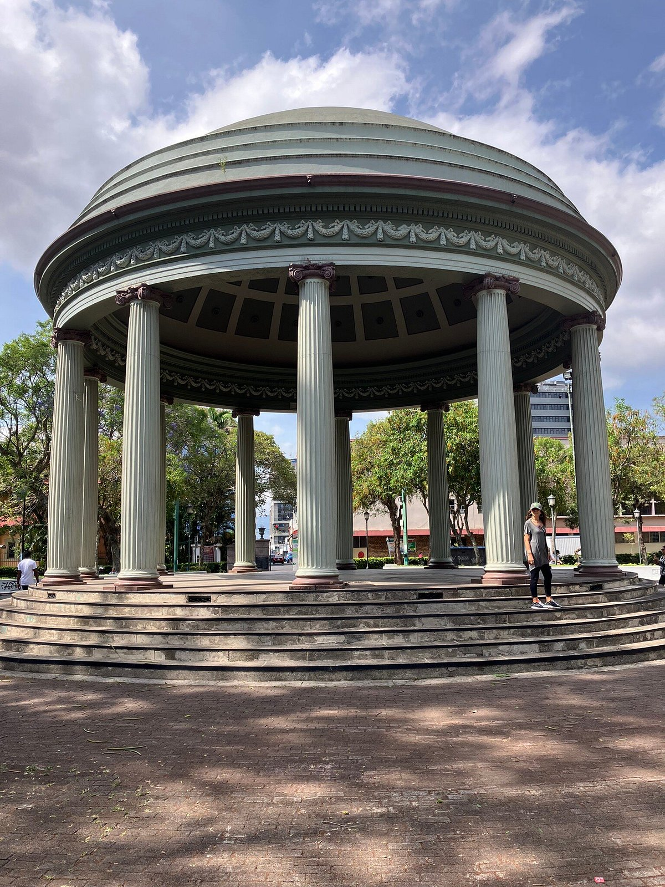
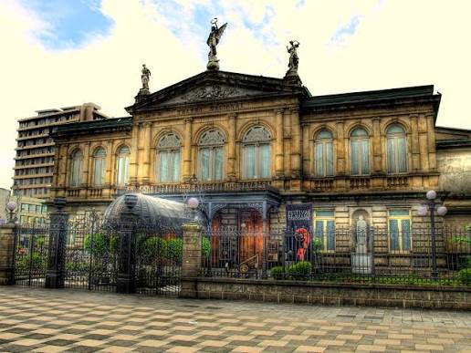
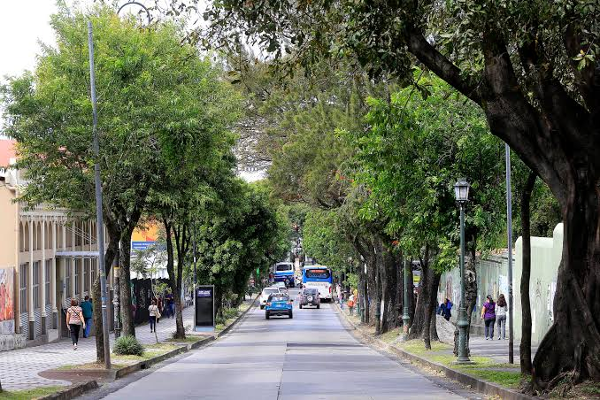

Ritmos de la ciudad
Concierto · Parque Nacional
14:00 - 15:00

Centro de San José · Entrada libre
Sábado 10 de abril de 2027
Horario general: 11:00 a. m. - 9:00 p. m.
Concierto · Parque Nacional
14:00 - 15:00
Teatro · Parque España
14:00 - 14:45
Danza · Paseo de las Damas
14:00 - 15:00
Sabores josefinos · Parque Morazán · Gastronomía
Cuentos para jugar · Plaza de la Democracia · Infantil
Voces del barrio · Parque España · Conferencia
Sonidos urbanos · Parque Nacional · Música
Manos creadoras · Parque Morazán · Taller
Swing criollo · Paseo de las Damas · Danza

Escenario Central
15:30 Sonidos urbanos
18:00 Concierto de cierre

Zona Familiar
16:00 Voces del barrio
18:30 Música electrónica

Zona Cultural
15:00 Sabores josefinos
17:00 Manos creadoras

Teatro
15:00 Obra al atardecer
17:30 Voces de la ciudad

Zona Cultural
15:30 Swing criollo
17:30 Pasacalles